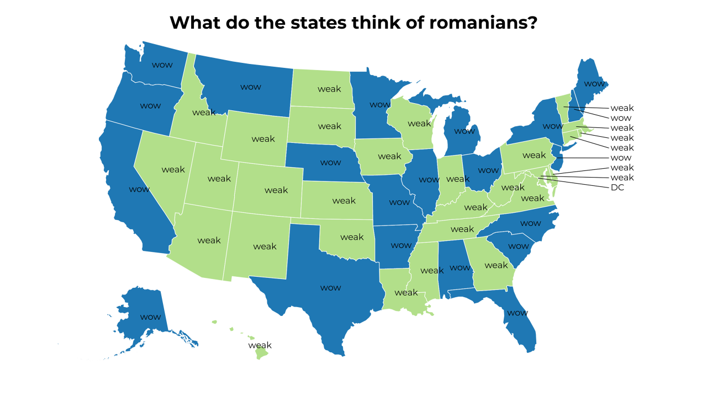
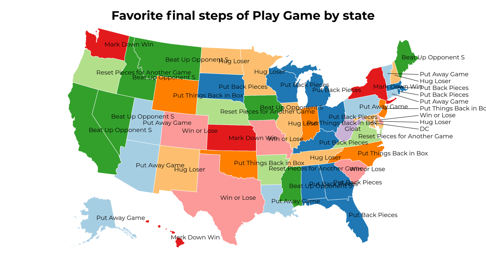

A Land of Contrasts
2018-5-29 17:30:17
Which things that Write Down is a first step of does your state hate the most?
2018-5-29 14:30:18
Favorite United States National Security Council by state
2018-5-29 11:30:17
Which final steps of Drive does your state love the most?
2018-5-29 08:30:16

What do the states think of romanians?
2018-5-29 05:30:16

Favorite final steps of Play Game by state
2018-5-29 02:30:16
Which motivations of In Charge of Project does your state hate the most?
2018-5-28 23:30:17
Which things used for Eat With does your state hate the most?
2018-5-28 20:30:16
Favorite things used for Hold Water by state
34
|
33
|
32
|
31
|
30
|
29
|
28
|
27
|
26
|
25
|
24
|
23
|
22
|
21
|
20
|
19
|
18
|
17
|
16
|
15
|
14
|
13
|
12
|
11
|
10
|
9
|
8
|
7
|
6
|
5
|
4
|
3
|
2
|
1
|
0